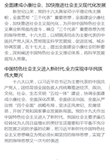

党的十一届三中全会的召开，意味着中国从此进入了改革开放和社会主义现代化建设的历史新时期，中国共产党从此开始了建设中国特色社会主义的新探索。四十年的探索，一路风雨，一路辉煌。
经过四十年的探索证明，中国特色社会主义是实现中华民族伟大复兴的必由之路，人民坚持和发展中国特色主义必须坚持党的领导。历史昭示我们，没有中国共产党的领导，就没有中国特色社会主义的成功，就没有中国人民的幸福安康，就没有中华民族的伟大复兴。因此必须不断总结历史、吸取经验，不断加强和改进党的建设，推进党的执政能力建设、思想建设、组织建设、作风建设、反腐倡廉建设、制度建设，不断提高党的执政能力，提高拒腐防变能力，打造一支坚强有力、心怀人民的政党。
改革开放40年来党的历史进程
改革开放40年来丰硕成果
改革开放40年来党的建设的宝贵经验
新世纪以来，党的十六大高举邓小平理论伟大旗帜，全面贯彻“三个代表”重要思想，全面建设小康社会，加快推进社会主义现代化，为开创中国特色社会主义事业新局面而奋斗，确立“三个代表”重要思想为党的指导思想。十六大后，以胡锦涛同志为主要代表的中国共产党人深入贯彻落实科学发展观，促进区域、城乡协调发展，在十七大上，提出全面建设小康社会的新要求，深刻阐述中国特色社会主义理论体系，将科学发展观写入党章。
中国特色社会主义进入新时代,全力实现中华民族伟大复兴十八大以来，以习近平总书记为主要代表的中国共产党人，团结带领全国各族人民统筹推进经济、政治、文化、社会、生态文明“五位一体”建设，协调全面建成小康社会、全面深化改革、全面依法治国、全面从严治党“四个全面”战略布局，坚决正风肃纪、反腐惩恶，开创了党和国家事业发展新局面。党的十九大作出中国特色社会主义进入了新时代、我国社会主要矛盾已经转化为人民日益增长的美好生活需要和不平衡不充分的发展之间的矛盾的论断，把习近平新时代中国特色社会主义思想确立为党必须长期坚持的指导思想，实现了党的指导思想又一次与时俱进
改革开放40年来丰硕成果
1.物质经济保障生活改革开放40年的发展,中国人民的生活经历了由食不果腹、衣不蔽体到温饱,再到整体小康的跨越式转变。
随着国家社会保障制度不断健全，从城乡一体化养老保险制度到城镇职工基本医疗保障制度、新型农村合作医疗制度,让“老有所养”“人人享有基本医疗服务”成为可能。让广大群众减少对疾病、养老等问题的后顾之忧。中国共产党不断完善我国社会保障体系，体现了国家对促进社会公平，社会资源合理配置的关注。这对保障广大群众，特别是弱势群体的基本生活、推动经济发展，维护社会稳定发展具有重要意义。
2.精神文明建设在温饱都不能解决的时代，人们很难有精力开展业余活动，精神文化匮乏。经过40年的努力奋斗，在人们的物质生活不断满足的同时，人们的精神文明内涵也更加丰富。随着社会主义核心价值体系的不断健全，人民群众的思想观念、精神面貌也发生了质的改变。以农村为例，我党为丰富农村群众的精神生活，从硬件设施上建立活动场所，农家书屋，从软件设施上开展送文艺下村、举办各类技能培训，多举措促进农村精神文明生活不断丰富。如今，在农忙闲暇之余，农村群众还会组建文艺队，参加各类文化表演，精神文化得到了极大的丰富。
THE END
-

-

-

-

- 
-

-

-